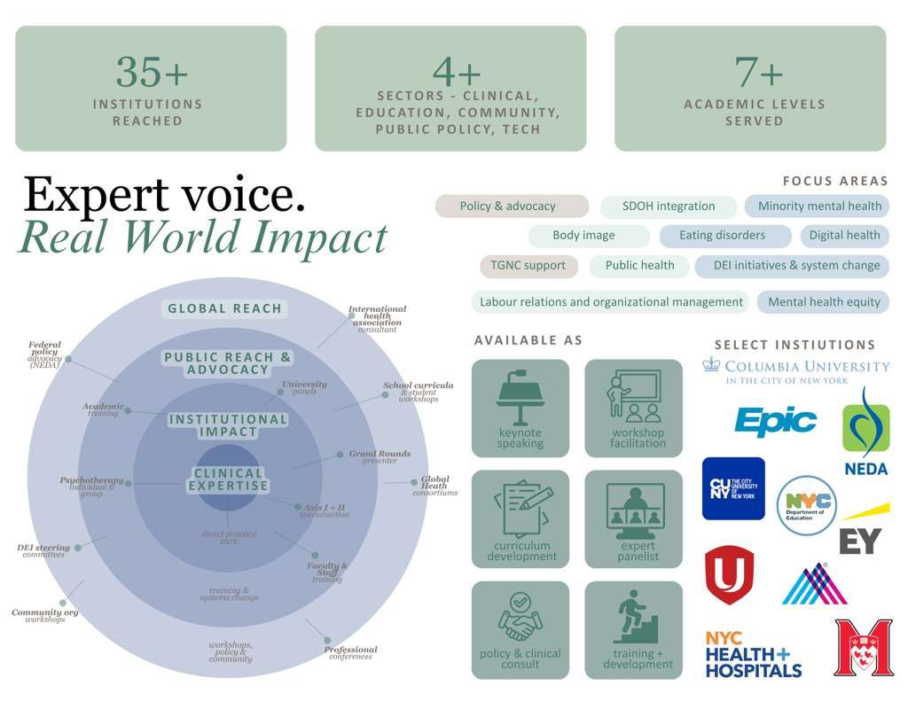

I bridge the gap between clinical excellence and organizational impact — building programs, shaping policy, and expanding access to care for the communities that need it most.

Sabrina
Shih
Shih
Hi, I'm Sabrina.
I'm a Licensed Clinical Social Worker and currently the Director of Social Services at Mount Sinai Hospital's Eating and Weight Disorders Program, one of the nation's leading specialized eating disorder centers.
My work merges clinical care and operational strategy. I lead interdisciplinary teams, design scalable programs, and develop evidence-based protocols that improve how healthcare systems deliver care — especially to underserved and culturally diverse populations. Using my foundation in direct clinical practice, I bridge the gap between high-level policy and frontline reality by integrating digital health and ensuring protocols work in practice.
My work is driven by a commitment to health equity and dismantling systemic barriers in healthcare. Beyond operations, I advocate for public health policy and provide clinical consultation and training for organizations across New York.
A few things I care about deeply: health equity, culturally competent care, finding better, more human ways to build healthcare systems that scale, and all things cheap eats + miniatures.
What
I Do
I Do
Areas of Expertise
Clinical Leadership & Program Development
I direct interdisciplinary clinical teams and oversee the full lifecycle of program development. From delivering frontline therapeutic excellence to building operational infrastructure that keeps programs running at scale, I have helped build mental health programs to expand access to care while maintaining clinical acuity and excellence.
Healthcare Operations & Quality Management
I’m experienced in designing workflows, performance metrics, and clinical quality systems that improve both patient outcomes and team efficiency. I understand how to translate complex clinical insight into measurable operational strategy. This includes the development and trouble-shooting of virtual care programs, where I ensure that digital delivery maintains clinical integrity while still optimizing team effectiveness, stakeholder alignment, and exceptional patient care. I am expertly skilled at helping build high-growth, large-scale healthcare infrastructures through ensuring consistent utilization management for efficiency, quality assurance to reduce variance, and ahead-of-curve transitions to the most cutting-edge, leading treatment modalities.
Policy & Advocacy
I leverage clinical data to influence systemic change at the federal level. By developing research-based policy analyses and presenting clinical evidence to legislative leaders in succinct and impactful ways, I work to shape public health outcomes. My contributions include federal advocacy efforts for significant mental health legislation, such as H.R. 2625, aimed at expanding access to specialized care. My policy work includes advocating for increased federal spending for eating disorder research by providing qualitative and quantitative research that synthesizes the lived experiences of those struggling with eating disorders with measurable metrics demonstrating, for example, the impact of improved outcomes with clinics that implement novel research.
Consulting & Training
I consult with academic institutions, healthcare organizations, and community groups on various mental health related issues, such as, eating disorder prevention in schools, mental health in the workplace, equitable care delivery, and behavioural health workshops. Beyond individual expert consultation, I lead workforce development initiatives: training clinicians, medical students, educators, and other healthcare leaders to identify and address complex mental health challenges within their specific communities.
Outreach
Impact
Impact
Speaking & Workshops
I’m a frequent speaker, educator, and workshop facilitator on eating disorders, adolescent mental health, body image, and clinical care — across schools, hospitals, and professional organizations.
Available for speaking engagements, staff training, workshop facilitation, and program development. Get in touch to discuss.

Hospitals & Clinical Settings
- Mount Sinai Hospital Department of Social Work — Grand Rounds presenter
- Mount Sinai Hospital Pediatrics and Psychiatry — Teaching Pediatric Residents & Fellows
- Mount Sinai Hospital Adolescent Health Center — Transgender & Gender Non-Conforming (TGNC) Support Group
- Mount Sinai Hospital Gynecologic Oncology Support Program — Navigating Body Image Through Survivorship
- Mount Sinai Hospital Department of Psychiatry — Diversity, Equity, Inclusion Steering Committee
- NYC Health + Hospitals — Diversity, Equity, Inclusion in the Mental Health Space
- Community Health Network — Resident training
- The Douglas Mental Health University Institute — Eating disorder curriculum consultant
- Montreal General Hospital — Volunteer training and consultant on eating disorder initiatives
Schools & Educational Institutions
- The Hewitt School —
- Student workshops Grades 6, 7, 8, 9, 10, 11, 12
- Faculty training
- Parent workshop
- Grace Church School —
- Student programming Grades 11, Grades 12
- The Brearley School —
- Curriculum development & parent workshop
- New York City Department of Education — Mental Health & Hygiene Curriculum building
- New York City Department of Education — Eating disorder prevention workshop
- CUNY (The City of New York) — Health fair programming
- Industrial Relations Conference 2015, 2016, 2017, 2018 — Organizer & speaker
- Empower McGill - Disabilities inclusion in the Workplace — Speaker
Community & Professional Organizations
- Columbia University School of Social Work — Alumni career panel
- Columbia University School of Social Work — Minority Mental Health workshop
- Columbia University Mental Health Caucus — Intersectional Health Care
- National Eating Disorders Association — Annual advocacy Day & federal policy presentations
- New York Clinical Association —
- Behavioural health training: Navigating Complex Eating Disorder Care
- Caregiver support team workshop
- Mindful Eating Project — Presenter
- Healthcare Breakthroughs Auxiliary Board — Speaker
- Unifor Labour Relations Conference: Mental Health in the Workspace — Panelist
- RBC Royal Bank: Inclusion in the Private Sector — Speaker & Consultant
- Ernst & Young EY Employee Mental Health — Speaker & Consultant
Past
Talks
Talks
Speaking Engagements
Highlighting systemic issues, eating disorder prevention in schools, and clinical care coordination strategies.
Get In
Touch
Touch
Clinical
Focus
Focus
Specialties
- Eating and Weight Disorders (Director of Adolescent Program)
- Trauma Support Specialist (Trauma Institute International)
- Culturally and diagnostically diverse psychotherapies
Advocacy
& DEI
& DEI
Leadership & DEI
Dedicated to dismantling systemic barriers and improving clinical integration.
- Mt. Sinai DEI Committee
- Committee to Address Anti-Asian Bias and Racism (CAABR)
- Led NEDA Advocacy Day (H.R. 2625)